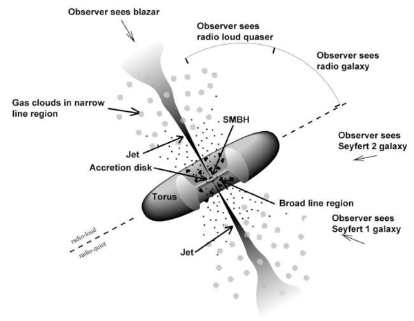

Active Galactic Nuclei (AGNs)
A small fraction (~10%) of galaxies in our universe has a compact, highly luminous (L~1044−48 ergs/s) central region that emits radiation comparable to or sometimes even higher than the radiation emitted by the rest of the galaxy. These galaxies are called 'active galaxies' and their nuclei are termed as 'Active Galactic Nuclei' (AGNs). Some AGNs host relativistic bipolar outflows or jets that emit non-thermal continuum emission from radio to γ−rays.
1.1 A Brief History of AGN
In 1908, E.A. Fath at Lick Observatory detected strong emission lines in the optical spectra of nebula NGC 1068. Carl Seyfert, in 1943, observed strong broad emission lines in the optical spectra of six spiral galaxies. In the late 1950s, radio surveys published catalogues such as the Third Cambridge Catalogue (3C). Schmidt (1963) identified 3C 273 as an extragalactic source with redshift z = 0.158 — a new class named quasars (QSOs).
The idea of accretion onto a supermassive black hole was proposed in the 1960s by Salpeter (1964) and Lynden-Bell (1969). Rees (1984) confirmed AGN are powered by accreting SMBHs at galactic centers.
1.2 Basic Components of AGN
- Supermassive Black Hole (SMBH): MBH ~ 106-9 M☉ at the center, pulling surrounding matter by gravity.
- Accretion Disk (AD): Spiraling disk of infalling matter that radiates thermally across UV/optical bands.
- X-ray Corona: Hot plasma sandwiching the disk — inverse-Comptonizes disk photons to produce X-rays.
- Broad Line Region (BLR): Dense (~1010 cm−3) gas clouds at 0.1–1 pc, producing Doppler-broadened emission lines.
- Obscuring Torus: Dusty torus at 1–10 pc; obscures central regions and re-emits in infrared.
- Narrow Line Region (NLR): Lower density (~103 cm−3) clouds at ~100 pc producing narrow emission lines.
- Relativistic Jets: Magnetically collimated bipolar outflows extending to kpc–Mpc scales, seen in jetted AGN.
1.3 AGN Taxonomy & Blazars
About 15% of AGN are jetted-AGN (Padovani et al. 2017). Blazars are jetted-AGN aligned at small (≤ 15–20°) viewing angles (Urry & Padovani 1995), and their spectra are dominated by non-thermal radiation. They are subdivided into FSRQs (flat-spectrum radio quasars) and BL Lac objects.

References
- Ghisellini, G., Maraschi, L., & Tavecchio, F. 2009, MNRAS, 396, L105
- Padovani, P., Alexander, D. M., Assef, R. J., et al. 2017, A&ARv, 25, 2
- Rees, M. J. 1984, ARA&A, 22, 471
- Urry, C. M., & Padovani, P. 1995, PASP, 107, 803